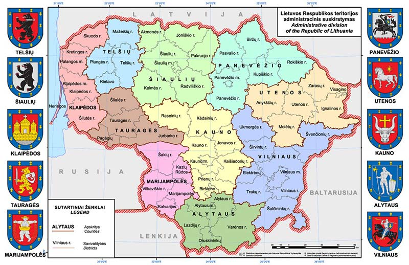

Valstybės plotas - 65300 kv.hm.
Geografinė padėtis. Lietuvos valstybės teritorija  plyti rytinėje Baltijos jūros pakrantėje. 1989m.Prancūzijos nacionalinis geografijos institutas nustatė, kad Lietuvoje, 26 km į šiaurę nuo Vilniaus,šalia Purnuškių kaimo, yra Europos geografinis centras.Valstybės kaimynės - Latvija, Baltarusija, Lenkija, Rusija.Sostionė- Vilnius
Politinė sistema Lietuvoje - parlamentinė demokratija. Valstybės vadovas - Prezidentas, vykdomoji valdžia - Prezidento skiriama Vyriausybė, įstatymų leidžiamoji valdžia - Seimas.
Administracinis suskirstymas. Lietuvos teritorija suskirstyta į 10 apskričių. Apskritis sudaro 60 savivaldybių. Savivaldybės suskaidytos į 546 seniūnijas
Ypatinga mūsų istorija: 1918m. vasario ąšd. pasirašytas Nepriklausomybės aktas ir Lietuva paskelbta nepriklausoma valstybe; 1990m. kovo 11 d. atkurta Lietuvos Respublikos Nepriklausomybė.